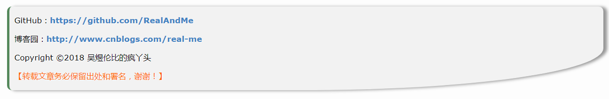

原文出处:本文由博客园博主千年轮回提供。
原文连接:https://www.cnblogs.com/ajaemp/p/11757334.html
原文连接:https://www.cnblogs.com/ajaemp/p/11757334.html
1. 基础介绍
1-1. 介绍一下我的博客设置
- 我个人比较习惯用
Makedown来编写，所以我选择的编辑器是Makedown，在[ 管理 ] - [ 选项 ]中可以设置。 - 在
[ 管理 ] - [ 模版 ]中有许多博客模板，可以直接使用，界面也会变好看一点。我使用的是red_autumnal_leaves （红叶） - 因为我的样式定制是在
红叶的模版基础上进行修改的，所以可能其他的模版会出现兼容的问题，这个可以根据自己的模版和喜好进行修改。（我已经尽量做到样式兼容了，但是模版太多，心有余而力不足啊。。。）
1-2. 简单的操作
可以通过审查元素的方法，来设置自己满意的样式。操作是F12。
F12操作可以打开控制面板，具体的样式可以直接在上面修改，然后把修改后的样式保存下来。
保存后的样式，复制到[ 管理 ] - [ 设置 ] - 页面定制CSS代码上面，然后[ 保存 ]
注意：
有时候修改的样式没有起作用，是因为样式的优先级的原因，这里我选择简单粗暴的!important来解决
2. 设置标题、子标题、导航栏
2-1. 标题和子标题
标题和子标题 是页面最顶部的，设置在 [ 管理 ] - [ 设置 ] - 标题，子标题
/* 博客标题和副标题 */
#blogTitle {
overflow: hidden;
height: auto;
text-align: center;
}
#blogTitle h1 {
font-size: 35px;
width: 100%;
margin-left: 0;
}
#blogTitle h2 {
margin-left: 0;
width: 100%;
font-size: 20px;
font-weight: bold;
color: #000;
}2-2. 博客顶部的导航栏
/*博客导航栏 */
#navList {
float: left;
}
#navList li {
border: none;
font-size: 16px;
}
.blogStats {
display: none;
}３. 设置博客侧边栏
3-1. 侧边栏整体公共样式
/*sideBar博客侧边栏容器*/
#sideBar {
width: 300px;
box-sizing: border-box;
margin-left: 30px;
padding: 0;
}
.newsItem, .catListComment, .catListEssay, .catListView, .catListFeedback,
#blog-calendar, #sidebar_postcategory, #sidebar_postcategory, #sidebar_postarchive, #sidebar_search {
/*侧边栏每一模块添加圆角和阴影*/
border-radius: 10px;
box-shadow: 1px 2px 3px #A7A8AD;
background-color: #fff;
}
#sideBarMain h3, .newsItem h3 {
/*侧边栏每个模块的标题部分*/
font-size: 1.2em;
height: 50px;
line-height: 50px;
text-indent: 0.5em;
background: url(http://www.cnblogs.com/skins/red_autumnal_leaves/images/titlebg.png) no-repeat left center #fff;
padding: 0 0 0 50px;
margin-bottom: 0;
border: 1px solid #55895B;
border-left-width: 5px;
border-radius: 10px;
border-right-width: 5px;
}
/*侧边栏列表样式*/
#sideBarMain ul {
background-color: #fff;
padding: 15px 20px;
border-bottom-left-radius: 10px;
border-bottom-right-radius: 10px;
}
#sideBarMain li {
line-height: 40px;
border-bottom: 1px solid #ddd;
font-size: 14px;
}3-2. 侧边栏公告
3-3. 头像设置
在 [ 管理 ] - [ 设置 ] - 博客侧边栏公告 这里添加 html 代码，用来添加头像，地址用自己的头像
//图片的地址更换成你的头像的地址
<img src="https://cnblogspic.oss-cn-hangzhou.aliyuncs.com/avatar/937605/20180122200140.png">3-4. 侧边栏公告样式
/*侧边栏公告*/
#blog-news > img {
/*头像*/
display: block;
margin: auto;
border-radius: 50%;
}
#profile_block {
font-size: 15px;
padding: 20px;
line-height: 1.8;
}
#profile_block > a:link {
color: #F60;
}
/*公告结束*/3. 侧边栏日历
/* 日历 */
#blog-calendar, #calendar {
width: 300px;
}
#blog-calendar td {
padding: 5px 3px;
font-size: 14px;
}
#blog-calendar td a {
font-weight: bold;
color: #59a020;
}
#blog-calendar table a:hover {
color: #59a020;
text-decoration: underline;
background: transparent;
}
#blog-calendar table u {
text-decoration: none;
}
/*日历结束*/4. 侧边栏搜索框
/*侧边搜索框*/
.mySearch {
padding-bottom: 10px;
}
.mySearch > div {
padding-top: 10px
}
.mySearch #q {
height: 40px;
width: 150px;
border-radius: 5px;
border: 1px solid #ddd;
}
.mySearch #btnZzk {
height: 42px;
width: 90px;
background: #fd6d0dd1;
color: #fff;
border-radius: 5px;
border: none;
font-size: 15px;
cursor: pointer;
}
.div_my_zzk {
padding: 0 20px;
display: flex;
justify-content: space-around;
}
/*搜索框结束*/４. 评论列表
碎碎念：
因为我更新博客的频率很少，而且质量还不是很高，所以评论也就很少。。。所以目前的评论列表样式是这样的，如果之后有更多的评论，那么还会继续修改样式的，毕竟我是一个颜控啊！！
4-1. 底部评论表

/*评论*/
/*评论列表*/
#blog-comments-placeholder {
border-radius: 10px;
background: #fff;
padding: 30px 40px;
}
.feedback_area_title {
background: url(//www.cnblogs.com/skins/red_autumnal_leaves/images/titlebg.png) no-repeat left center #fff;
border: 1px solid #55895B;
border-left-width: 5px;
border-radius: 10px;
border-right-width: 5px;
padding: 15px 50px;
}/* 提交评论按钮 */
#btn_comment_submit {
border: solid 1px #fd6d0dd1 !important;
width: 90px;
height: 40px;
color: #fff !important;
background-color: #fd6d0dd1 !important;
border-radius: 5px;
font-size: 16px;
cursor: pointer;
}4-2. 侧边栏评论
/*侧边评论*/
li.recent_comment_body {
line-height: 30px;
}5. 个性签名
个性签名 这个是根据个人的喜好设置的，可以在 [ 管理 ] - [ 设置 ] - [ 博客签名 ] 里面自定义设置。下面展示我的个性签名的设置。

/* 个性签名 */
#MySignature {
box-shadow: 8px 1px 10px #989898;
padding: 10px;
text-shadow: 1px 1px 1px #FFF;
font-size: 17px;
border-left: solid 5px #55895B;
background: #F3F3F3;
border-radius: 10px 10px 50% 10px;
line-height: 2.4;
margin: 40px 0;
}
#MySignature a {
text-decoration: none;
color: #4183c4;
font-weight: bold;
}
#MySignature a:hover {
text-decoration: underline;
color: #f60;
}
#MySignature span {
color: #f60;
}6. 博客文章主体样式
/* 标题title样式 */
#topics .postTitle {
font-size: 25px;
padding: 0 40px;
border: none;
box-sizing: border-box;
}
#cb_post_title_url {
border: 1px solid #55895B;
border-left-width: 5px;
border-radius: 10px;
border-right-width: 5px;
background-position: left center;
padding: 15px 50px;
width: 100%;
display: inline-block;
box-sizing: border-box;
}/*设置背景色和字体大小*/
body {
font-size: 15px;
box-sizing: border-box;
}/*mainContent主体内容容器*/
#main {
display: flex;
width: 95%;
}
#mainContent .forFlow {
margin: 0 0 0 310px;
}
#mainContent {
margin: 0 0 0 -310px;
}
#post_detail {
overflow: hidden;
}/* 主体内容样式 */
.postBody {
padding: 20px 40px;
}
#cnblogs_post_body {
font-size: 15px;
}
#cnblogs_post_body h2 {
//标题h2
border-left: 5px solid #55895B;
padding: 10px 20px;
line-height: 2;
background: #d6dbdf8a;
margin: 30px 0;
}
#topics .postDesc {
display: none;
}7. 其他部分的样式
/* 关注收藏等几个按钮 */
#green_channel {
padding: 10px;
margin: 20px 0;
font-size: 15px;
width: 400px;
}
#green_channel a {
border-radius: 3px;
text-shadow: none;
font-weight: normal;
box-shadow: none;
}/* 禁用下划线 */
.postBody a:link, .postBody a:visited, .postBody a:active {
text-decoration: none;
}
/* 上一篇下一篇 */
#post_next_prev {
font-size: 14px;
color: #535353;
}/*底部隐藏作者，隐藏推荐和反对*/
#author_profile {
display: none;
}
#div_digg {
display: none;
}
/*隐藏广告*/
#ad_t2, #cnblogs_c1, #under_post_news, #cnblogs_c2, #under_post_kb {
display: none;
}